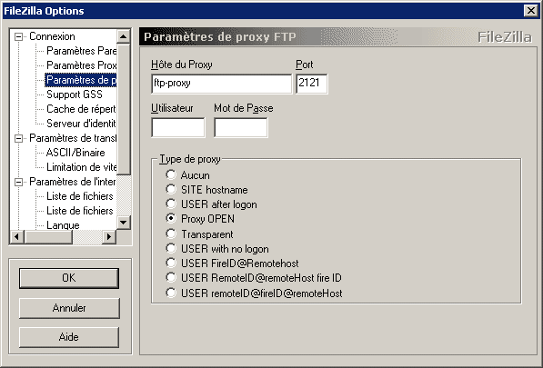

Configuration d'un Proxy FTP
Vue d'ensemble:
FileZilla supporte les connexions aux serveurs FTP par proxy FTP . Il existe beaucoup de types de proxy différents, mais FileZilla devrait pouvoir se connecter à travers la plupart des proxy ftp

| Hôte du Proxy | - | L'adresse du Proxy |
| Port | - | Le port du Proxy |
| Utilisateur | - | Le nom d'utilisateur utilisé pour votre connexion Proxy |
| Mot de passe | - | Le mot de passe utilisé pour votre connexion Proxy |
| Type de Proxy | - | Spécifie le type de Proxy. Essayez d'utiliser USER FireID@Remothost d'abord. Si vous avez des problèmes de connexion au serveur, essayez les autres types de proxy |
Contactez votre administrateur système si vous ne connaissez pas l'information requise ou si vous avez un problème de connexion en rapport avec le proxy.